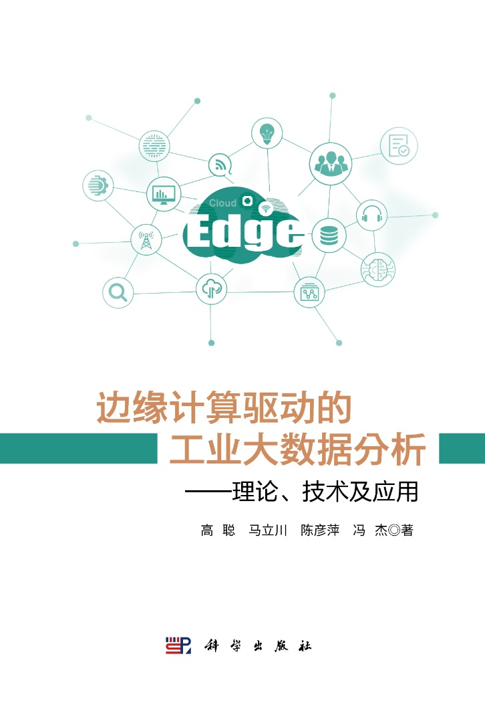
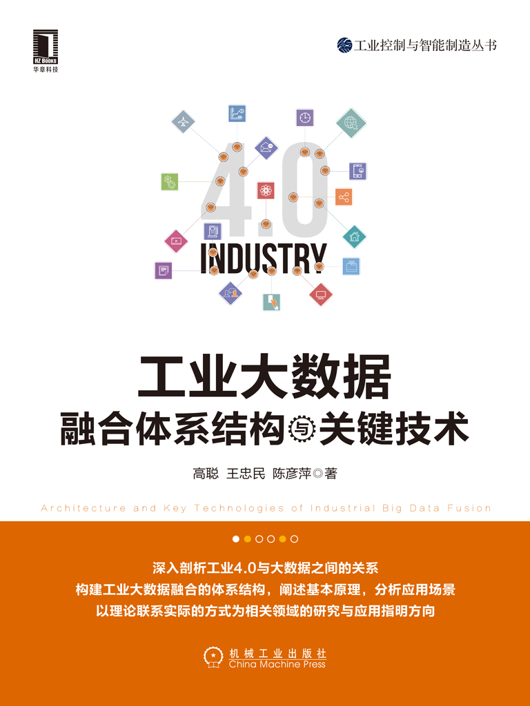
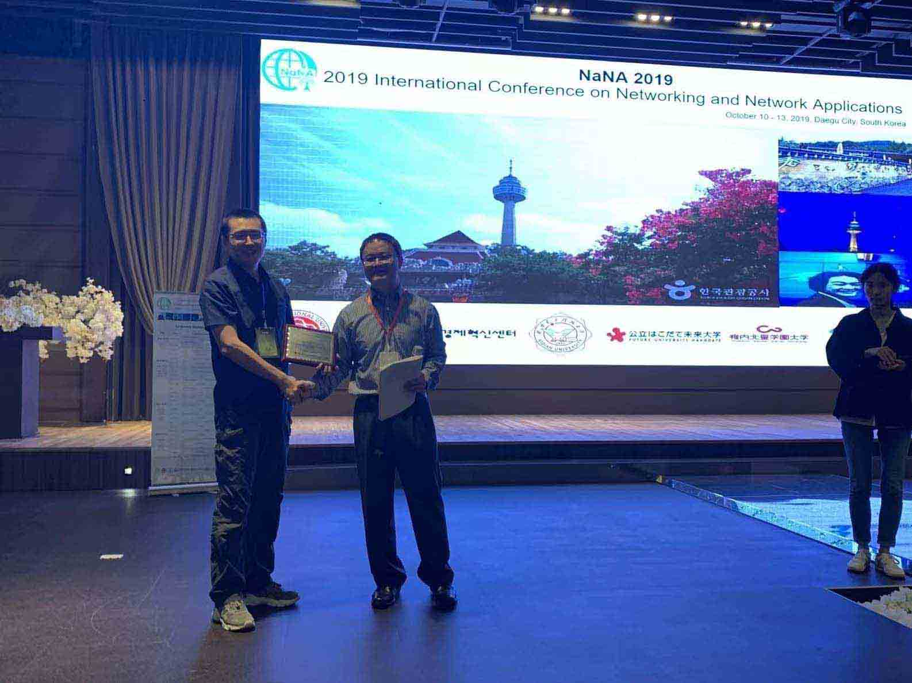

I am an Associate Professor with Xi'an University of Posts and Telecommunications (Dec 2015 ~ present). My current interests include data science, AI/autonomous driving, computer networks, and Linux, etc. Before I started the job, I did my bachelor, master's and PhD study at school of computer science and technology, Xidian University.
During Jan 2024 ~ Jan 2025), I acted as a visiting scholar at James Cook University in Australia.
The first book and the second book are mainly based on my research when I am with Xi'an University of Posts and Telecommunications, while the third one is mainly based on my research when I pursued my PhD in Xidian University.
1. Cong Gao, Lichuan Ma, Yanping Chen and Jie Feng. Edge Computing-driven Industrial Big Data Analysis—Theory, Technologies, and Applications, Science Press, China. Dec 2023, ISBN: 9787030771520.

2. Cong Gao, Zhongmin Wang and Yanping Chen. Architecture and Key Technologies of Industrial Big Data Fusion, China Machine Press, China. Aug 2020, ISBN: 9787111658207.

3. Cong Gao. Theory and Key Technologies of Web Service Discovery, Science Press, China. Dec 2017, ISBN: 9787030547446.
I am interested in anomaly detection of time series and data mining in the field of smart manufacturing. Besides, I think autonomous driving is also quite attractive.
I am teaching ...
Recently, I am in charge of the following projects.
1. Jan 2024, Innovation Achievement Award for Industry University Research Cooperation (Second Prize), China Industry-University-Research Institute Collaboration Association, China. (Awardee Team: Cong Gao, Chao Lu, Yanping Chen, Lichuan Ma, Xiaolong Zhao, Jie Feng, Qingli Yan, Qingqi Pei, Zhongmin Wang and Hengshan Zhang.)
2. Apr 2023, Shaanxi Province Science and Technology Award for Higher Institutions (Second Prize), Shaanxi Provincial Department of Education, China. (Awardee Team: Cong Gao, Yanping Chen, Zhongmin Wang, Hong Xia, Hengshan Zhang and Hanlin Sun.)
3. Mar 2022, Shaanxi Province Science and Technology Award for Higher Institutions (Second Prize), Shaanxi Provincial Department of Education, China. (Awardee Team: Cong Gao, Yanping Chen, Zhongmin Wang, Hengshan Zhang, Hong Xia and Xiaomin Jin.)
4. Oct 2019, South Korea, IEEE 4th International Conference on Networking and Network Applications (NaNA) Best Paper Award. (Awardee Team: Cong Gao, Zhongmin Wang and Yanping Chen.)

5. Nov 2019, China Institute of Communications Science and Technology Award (Second Prize). (Awardee Team: Zhongmin Wang, Xi Li, Zhixiang Zhu, Yanping Chen, Fengwei Wang, Zhong Yu, Cong Gao, Weigang Liu, Chaoyang Xie and Hengshan Zhang.)
6. Apr 2020, Shaanxi Province Science and Technology Award for Colleges and Universities (First Prize). (Awardee Team: Zhongmin Wang, Chen Lu, Zhixiang Zhu, Xi Li, Yanping Chen, Fengwei Wang, Ning Lv, Zhong Yu, Qingtao Yuan, Chaoyang Xie and Cong Gao.)